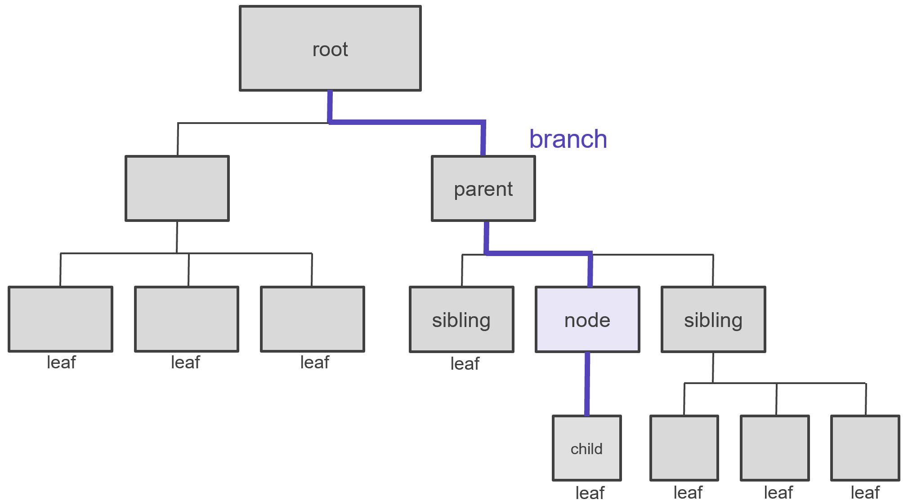

On Youtube
Video: trees, DOM, document queries, DOM manipulatie, events
- 00:00 wat is DOM
- 02:40 vergelijking met WPF
- 06:46 DOM querying
- 23:27 DOM manipulatie
-
42:26 Events
- 43:01 WPF click event basisvoorbeeld
- 44:18 Javascript equivalent met addEventListener()
- 48:53 andere events (mouseover/mouseout voorbeeld)
- 50:50 sender object in WPF
- 52:53 e.target equivalent in Javascript (buttons voorbeeld)
- 56:30 event bubbling (3x3 tabel voorbeeld)
- 1:02:41 e.preventDefault() (link click voorbeeld)
- 1:06:15 e.preventDefault() (form submit voorbeeld)
- 1:10:29 FotoGallerij voorbeeld
- 1:15:03 FormChecking voorbeeld
Web vs. WPF
WPF- en webtoepassingen hebben grote overeenkomsten:
| WPF TOEPASSING | WEB TOEPASSING | ||
|---|---|---|---|
| structuur | XAML | HTML | syntax lijkt sterk op elkaar |
| design | XAML attributen | CSS properties | fonts, margins, paddings, borders... |
| layout | Grid, WrapPanel, Canvas... | CSS Grid, FlexBox, positionering... | hebben zelfde layoutprincipes |
| code-behind | C# | Javascript | event handling, logica... |
Veel WPF principes als event handling, manipulaties van controls e.d. zul je ook terugvinden in Javascript webtoepassingen. Er zijn uiteraard ook een aantal verschillen:
- Javascript en C# hebben een verschillende syntax (al zijn het beiden C-achtige talen)
- WPF controls en HTML elementen hebben vaak heel verschillende namen en attributen
- over het algemeen biedt CSS veel meer mogelijkheden dan XAML attributen
- over het algemeen biedt WPF veel meer componenten dan standaard HTML
DOM
Boomstructuren
Boomstructuren komen veel voor in programmatie, en in web in het bijzonder: denk aan overerving, organisatie van namespaces, in XAML code... Voorwaarden om van een boomstructuur te kunnen spreken:
- elke node heeft exact één parentnode
- een parentnode kan een willekeurig aantal childnodes hebben
- er ligt één rootnode aan de basis waar alle andere nodes hun oorsprong vinden
Neem volgend eenvoudig HTML document:
<!doctype html>
<html lang="en">
<head>
<title>testpagina</title>
<meta charset="UTF-8">
<meta name="viewport" content="width=device-width, initial-scale=1.0">
</head>
<body>
<h1>Introductie</h1>
<p>Onderwerpen van deze cursus (zie ook de <a href="">Youtube channel</a>):</p>
<ul>
<li>javascript syntax</li>
<li>DOM manipulatie</li>
<li>web API's</li>
</ul>
</body>
</html>
Grafisch kan je de structuur als volgt voorstellen:

De html node noemt men de root, de title is een child van de head, h1, p en ul zijn siblings enz... Samengevat:
| term | omschrijving |
|---|---|
| node | alle elementen noemt men tree nodes |
| root | de bovenste node, hier de html |
| parent | direct bovenliggende node, bv. ul is parent van de li’s |
| ancestor | bovenliggende node, bv. body is ancestor van a |
| sibling | nodes met dezelfde parent, bv. title en meta |
| branch | vertakking, bv. head, title en meta zitten allen op dezelfde branch |
| leaf | node zonder verdere vertakking, bv. title |
Visueel voorgesteld:
Document Object Model
Een Document Object Model of kortweg DOM is een programmeertechnisch model van een HTML pagina waarmee scripts kunnen interageren. Het is in essentie een boomstructuur waar elke node events, methodes en properties heeft die de programmeur kan aanspreken in zijn scripts.
De vragen die centraal staan zijn:
- hoe kan ik met mijn script objecten vinden in het HTML document (buttons, afbeeldingen, teksten...)?
- hoe kan ik met mijn script properties en methodes gebruiken om die objecten te manipuleren?
- hoe kan mijn script reageren op events (interactie van de gebruiker, pagina is geladen, video afgelopen...)?
DOM querying
XAML nodes vinden in C#
In WPF toepassingen kan je nodes aanspreken via hun x:Name attribuutwaarde. Nemen we een eenvoudig voorbeeld, een tekst van een TextBox kopiëren naar een label:
<Window Title="Button Test" Background="#FFF4F2CB" ...>
<Grid>
<TextBox x:Name="inpTest" Text="kot kot kedei" ... />
<Label x:Name="lblMessage" Content="" ... />
</Grid>
</Window>public MainWindow() {
InitializeComponent();
lblMessage.Content = $"tekst in het tekstvak: {inpTest.Text}";
}
HTML elementen vinden in Javascript
In Javascript bestaat in theorie een gelijkaardige optie, nl. nodes rechstreeks aanspreken via hun HTML id attribuut. Het vorig voorbeeld, de HTML/Javascript versie:
<!DOCTYPE html>
<html lang="nl">
<head>
<title> Button Test </title>
<meta charset="utf-8" />
<style> body { background-color: #F4F2CBFF; } </style>
</head>
<body>
<input type="text" value="kot kot kedei" id="inpTest">
<p id="lblMessage"></p>
<script src="js/scripts.js"></script>
</body>
</html>lblMessage.innerHTML = `tekst in het tekstvak: ${inpTest.value}`;Er zijn verschillende redenen waarom dit in praktijk zo niet gedaan wordt:
- HTML elementen zonder id-attribuut worden niet gevonden
- indien het id-attribuut een koppelteken bevat, bv. id="shopping-cart", wordt het evenmin gevonden
- het idee HTML nodes via hun id attribuut beschikbaar te maken in Javascript komt van Internet Explorer, en zoals alle ideeën van Internet Explorer, is dit dus ook een slecht idee
HTML document queries
De juiste manier om HTML nodes aan te spreken in Javascript is met één van de query-functies:
| query functie | voorbeeld | omschrijving |
|---|---|---|
querySelector |
document.querySelector('#frm1 [type=submit]') |
zoek eerste node in document op basis van een CSS selector |
querySelectorAll |
document.querySelectorAll('nav a') |
zoek alle nodes in document op basis van een CSS selector |
Daarnaast zijn er nog een aantal oudere get-functies die we in deze cursus niet meer gebruiken:
| get functie | voorbeeld | query alternatief | omschrijving |
|---|---|---|---|
getElementById |
document.getElementById('btnOk') |
document.querySelector('#btnOk') |
zoek node in document op basis van een id |
getElementsByClassName |
document.getElementsByClassName('green') |
document.querySelectorAll('.green') |
zoek node in document op basis van een class attribuut |
getElementsByName |
document.getElementsByName('grpGender') |
document.querySelectorAll('[name=grpGender]') |
zoek node in document op basis van een name attribuut |
getElementsByTagName |
document.getElementsByTagName('img') |
document.querySelectorAll('img') |
zoek node in document op basis van een tag naam |
Eén element vinden met querySelector()
Het vorige voorbeeld herschreven met querySelector:
<!DOCTYPE html>
<html lang="nl">
<head>
<title> Button Test </title>
<meta charset="utf-8" />
<style> body { background-color: #F4F2CBFF; } </style>
</head>
<body>
<input type="text" value="kot kot kedei" id="inpTest">
<p id="lblMessage"></p>
<script src="js/scripts.js"></script>
</body>
</html>const lbl = document.querySelector('#lblMessage');
const inp = document.querySelector('#inpTest');
lbl.innerHTML = `tekst in het tekstvak: ${inp.value}`;
Je kan niet alleen id-selectoren, maar elke geldige CSS selector meegeven als argument:
<nav>
<ul>
<li class="active"><a href="about.html">Over mij</a></li>
<li><a href="practical.html">Praktisch</a></li>
<li><a href="contact.html">Contact</a></li>
</ul>
</nav>
const activeLink = document.querySelector('nav li.active a');
console.log(`actief menu item is "${activeLink.innerHTML}"`);
console.log(`dit item linkt naar ${activeLink.href}`);
Bij meerdere matches, wordt de eerste genomen:
<nav>
<ul>
<li class="active"><a href="about.html">Over mij</a></li>
<li><a href="practical.html">Praktisch</a></li>
<li><a href="contact.html">Contact</a></li>
</ul>
</nav>
const firstLink = document.querySelector('nav a');
console.log(`eerste menu item: "${firstLink.innerHTML}"`);

Meerdere nodes vinden met querySelectorAll()
Wil je alle matches, gebruik dan querySelectorAll(), en overloop bv. de resultaten met een lus:
<nav>
<ul>
<li class="active"><a href="about.html">Over mij</a></li>
<li><a href="practical.html">Praktisch</a></li>
<li><a href="contact.html">Contact</a></li>
</ul>
</nav>
const navLinks = document.querySelectorAll('nav a');
navLinks.forEach(lnk => {
console.log(`menu item: "${lnk.innerHTML}"`);
});
Query chaining
Je kan querySelector() en querySelectorAll() niet enkel van document, maar van elke node oproepen:
<table id="sample-table">
<tr><th>*</th><th>*</th><th>*</th><th>*</th></tr>
<tr><td>.</td><td>.</td><td>.</td><td>.</td></tr>
<tr><td>.</td><td>.</td><td>.</td><td>.</td></tr>
<tr><td>.</td><td>.</td><td>.</td><td>.</td></tr>
</table>
const table1 = document.querySelector('#sample-table');
const rows = table1.querySelectorAll('tr');
const cells = table1.querySelectorAll('td');
console.log(`tabel bevat: ${rows.length} rijen ${cells.length} cellen
`);

DOM manipulatie
Met DOM manipulatie bedoelen we het aanpassen van node eigenschappen van nodes: kleuren, zichtbaarheid, tekstinhoud... Je kan ook nodes toevoegen (of verwijderen) aan de DOM, bijvoorbeeld als je gegevens dynamisch inlaadt, maar dat komt later aan bod.
Er zijn in Javascript ruwweg vier categorieën van eigenschappen die je kan veranderen:
- HTML attributen: in Javascript zijn HTML attributen als Javascript properties beschikbaar onder dezelfde naam
- DOM properties: dit zijn bijkomende Javascript properties die niet bestaan als HTML attributen
- CSS classes: je kan CSS classes aanpassen via de
classListproperty - CSS stijlen: je kan rechtstreeks CSS properties aanpassen via de
styleproperty
We bekijken ze elk apart.
HTML attributen
Je kan HTML attributen in Javascript lezen/schrijven als properties met dezelfde naam. Voorbeeld voor src en alt attributen van een <img>, waarin een random foto geladen wordt:
<img id="img1" src="img/photo1-s.jpg" alt="random image">
const photos = [
'img/photo1-s.jpg',
'img/photo17-s.jpg',
'img/photo6-s.jpg',
'img/photo3-s.jpg',
'img/photo20-s.jpg'
];
const img1 = document.querySelector('#img1');
console.log(`oorspronkelijke url: ${img1.src}`);
const i = Math.floor(Math.random() * photos.length);
img1.src = photos[i];
img1.alt = `photo ${i}`;
console.log(`foto ${i} geladen`);
console.log(`huidige url: ${img1.src}`);
DOM properties
Naast HTML attributen hebben nodes in Javascript nog een pak andere DOM properties. Een uitstekende referentie is https://w3schools.com/jsref/.
Sommige zijn voor alle soorten nodes, sommige enkel voor specifieke nodes als <a>, <form> enz... Voorbeeld voor innerHTML (zie alle nodes) en naturalWidth/naturalWidth (zie <img>):
<img id="img1" src="https://rvdl.be/img/photo1-s.jpg" alt="">
<p id="message"></p>
const img1 = document.querySelector('#img1');
const msg = document.querySelector('#message');
msg.innerHTML = `afmetingen: ${img1.naturalWidth} x ${img1.naturalHeight}`;

innnerHTML
De meest gebruikte property is ongetwijfeld innerHTML; het verwijst naar de HTML inhoud van een element. De nieuwe inhoud is onmiddellijk beschikbaar in het DOM. Een voorbeeld:
<div id="content"></div>
<p id="message"></p>
const content = document.querySelector('#content');
const msg = document.querySelector('#message');
for (let i = 1; i < 5; i++) {
content.innerHTML += `<img id="img${i}"
src="https://rvdl.be/img/photo${i}-s.jpg" alt=""><br>`;
}
let numImages = document.querySelectorAll('#content img').length;
msg.innerHTML = `content contains ${numImages} images`;Events
Soorten events
Events zijn gebeurtenissen op HTML elementen als muiskliks, form submits enz... Een event heeft dus altijd een target, i.e. het element waarop het event plaatsvindt. Je kan functies verbinden aan events met addEventListener(). Enkele veel voorkomende events:
| event | omschrijving | typische targets |
|---|---|---|
click |
muisklik | alle elementen |
mouseover |
muis erboven | alle elementen |
mouseout |
muis ervan weg | alle elementen |
keydown |
toets ingedrukt | tekst elementen |
keyup |
toets losgelaten | tekst elementen |
focus |
element krijgt focus | form elementen |
blur |
element verliest focus | form elementen |
submit |
formulier wordt verstuurd | <form> |
input |
waarde wordt veranderd | <input> en <textarea> |
change |
waarde is veranderd | <input>, <textarea>, <select> |
Events inline koppelen (fout!)
In Javascript kan je in theorie event handlers net zoals bij WPF koppelen via een attribuut. Vergelijk de WPF versie:
<Button x:Name="btnHello" Content="Toon Hallo" Click="btnHello_Click" ... />
<Label x:Name="lblMessage" Content="" ... />
private void btnHello_Click(object sender, RoutedEventArgs e) {
lblMessage.Content = "Hallo daar";
}

met de Javascript versie:
<button id="btnHello" onclick="zegHallo()">Toon Hallo</button>
<p id="lblMessage"></p>const lblMessage = document.querySelector('#lblMessage');
function zegHallo() {
lblMessage.innerHTML = 'Hallo daar';
}

Dit is niet de manier waarop het gedaan wordt in Javascript! Net zomin als we inline CSS gebruiken, zullen we ook geen inline Javascript gebruiken.
Events met on...-properties koppelen (fout!)
We zullen events altijd in onze Javascript zelf koppelen. Een eerste oude en foute manier die je regelmatig nog tegenkomt op het internet is met onclick, onmouseover enz...:
<button id="btnHello">Toon Hallo</button>
<p id="lblMessage"></p>const lblMessage = document.querySelector('#lblMessage');
const btnHello = document.querySelector('#btnHello');
function zegHallo() {
lblMessage.innerHTML = 'Hallo daar';
}
btnHello.onclick = zegHallo; // zegHallo zonder haakjes ()Events koppelen met addEventListener() (juist!)
De enige correcte manier om events te koppelen is met addEventListener():
<button id="btnHello">Toon Hallo</button>
<p id="lblMessage"></p>const lblMessage = document.querySelector('#lblMessage');
const btnHello = document.querySelector('#btnHello');
function zegHallo() {
lblMessage.innerHTML = 'Hallo daar';
}
btnHello.addEventListener('click', zegHallo);- HTML en Javascript blijven netjes gescheiden
- je kan meerdere event handlers koppelen aan één click event (wat bij WPF niet kan)
- het is een moderne syntax die je ook in veel andere programmeertalen ziet (bv. Java)
Je kan de code nog wat inkorten door gebruik te maken van een anonieme functie:
const lblMessage = document.querySelector('#lblMessage');
const btnHello = document.querySelector('#btnHello');
btnHello.addEventListener('click', function() { // anonieme functie
lblMessage.innerHTML = 'Hallo daar';
});Aparte event handler methodes
Bij grotere programma's is je code leesbaarder als je expliciete functies definieert voor het afhandelen van events. Neem volgend schematisch fragment:
frm1.addEventListener('submit', function(e) {
e.preventDefault();
// ...code handling form submit
});
lnkFilter.addEventListener('click', function(e) {
e.preventDefault();
// ...code handling link click
});
btnAdd.addEventListener('click', function() {
// ...code handling button click
});Door de event handler functies apart te houden van de koppeling aan events, is je code veel beter gestructureerd:
// EVENT HANDLERS
function handleFormSubmit(e) {
e.preventDefault();
// ...code handling form submit
}
function handleLnkFilterClick(e) {
e.preventDefault();
// ...code handling link click
}
function handleBtnAddClick() {
// ...code handling button click
}
// HANDLE EVENTS
frm1.addEventListener('submit', handleFormSubmit);
lnkFilter.addEventListener('click', handleLnkFilterClick);
btnAdd.addEventListener('click', handleBtnAddClick);Event target
Wat in WPF de event sender is, heet in Javascript de event target. Een vergelijking, WPF versie:
<Button x:Name="btn1" Content="KNOP 1" Click="btn_Click" ... />
<Button x:Name="btn2" Content="KNOP 2" Click="btn_Click" ... />
<Button x:Name="btn3" Content="KNOP 3" Click="btn_Click" ... />
<Button x:Name="btn4" Content="KNOP 4" Click="btn_Click" ... />
<Button x:Name="btn5" Content="KNOP 5" Click="btn_Click" ... />
<Button x:Name="btn6" Content="KNOP 6" Click="btn_Click" ... />
<Label x:Name="lblBericht" Content="" />
private void btn_Click(object sender, RoutedEventArgs e) {
Button btn = (Button)sender;
lblBericht.Content = $"{btn.Content} geklikt";
}
Javascript versie:
<button>KNOP 1</button>
<button>KNOP 2</button>
<button>KNOP 3</button>
<button>KNOP 4</button>
<button>KNOP 5</button>
<button>KNOP 6</button>
<p id="pBericht"></p>
const buttons = document.querySelectorAll('button');
const lblBericht = document.querySelector('#pBericht');
buttons.forEach(btn => {
btn.addEventListener('click', function(e) {
lblBericht.innerHTML = `${e.target.innerHTML} geklikt`;
});
});

Event bubbling
Iets wat WPF niet kent maar Javascript wel, is event bubbling. Dat houdt in dat als bv. een element aangeklikt wordt (b.v een <td>), alle onderliggende elementen óók aangeklikt worden (dus <tr>, <table>...). Je kan daar handig gebruik van maken om bv. één event handler te definiëren op een tabel voor alle cellen:
<table id="board">
<tr><td>1</td><td>2</td><td>3</td></tr>
<tr><td>4</td><td>5</td><td>6</td></tr>
<tr><td>7</td><td>8</td><td>9</td></tr>
</table>
const table = document.querySelector('#board');
// definieer event op de hele tabel
table.addEventListener('click', function(e) {
// enkel indien TD aangeklikt is
if (e.target.nodeName != 'TD') return;
// toon aangeklikte cel
console.log(`${e.target.innerHTML} geklikt`);
});
Prevent default
Voor sommige HTML elementen heeft de browser reeds een eigen event handler, een browser default action. De belangrijkste zijn:
| ELEMENT | EVENT | BROWSER DEFAULT ACTION |
|---|---|---|
<a> |
click |
volg de url in href="..." |
<form> |
submit |
verstuur het formulier |
<input type="submit"><button type="submit"> |
click |
verstuur het formulier |
<input type="text"><textarea> |
keyupkeydownkeypress |
toon de ingedrukte toets in het tekstvak |
Standaard worden deze browser acties altijd uitgevoerd. Ook al voeg je bv. een click handler toe aan een link, bij klikken op de link zal hoe dan ook de pagina verlaten worden. Volgend voorbeeld illustreert dit:
<p>Kies je zoekmachine:</p>
<ul id="engines">
<li><a href="https://bing.com/">Bing</a></li>
<li><a href="https://google.com/">Google</a></li>
<li><a href="https://www.ecosia.org/">Ecosia</a></li>
</ul>
<p id="lblBericht"></p>
const links = document.querySelectorAll('#engines a');
const lblBericht = document.querySelector('#lblBericht');
links.forEach(lnk => {
lnk.addEventListener('click', function() {
lblBericht.innerHTML = `je hebt ${lnk.innerHTML} gekozen`;
});
});

De oplossing is de standaard browser actie disablen met e.preventDefault():
const links = document.querySelectorAll('#engines a');
const lbl = document.querySelector('#pBericht');
links.forEach(lnk => {
lnk.addEventListener('click', function(e) {
e.preventDefault();
lbl.innerHTML = `je hebt ${lnk.innerHTML} gekozen`;
});
});

Voorbeelden
Foto gallerij
We maken een eenvoudige fotogalerij met aanklikbare thumbnails bovenaan. Als extra zetten we ze allemaal in grijs; de bekeken foto's zetten we om in kleur. Ook voorzien we een opacity hover effectje. In de video kan je de volledige uitleg vinden. Een demo vind je hier.
Je herkent heel wat geziene technieken:
- DOM functies
querySelector()enquerySelectorAll() addEventListener()e.preventDefault()innerHTMLDOM propertysrcenhrefHTML attributen
<ul class="thumbs">
<li><a href="img/photo1.jpg">
<img src="img/photo1-s.jpg" alt="Amman, Jordanië"></a></li>
<li><a href="img/photo17.jpg">
<img src="img/photo17-s.jpg" alt="Noorderlicht, Lapland"></a></li>
<li><a href="img/photo6.jpg">
<img src="img/photo6-s.jpg" alt="mozaïek, Isfahan, Iran"></a></li>
<li><a href="img/photo3.jpg">
<img src="img/photo3-s.jpg" alt="Atlas, Marokko"></a></li>
<li><a href="img/photo20.jpg">
<img src="img/photo20-s.jpg" alt="bevroren bomen, Lapland"></a></li>
</ul>
<figure id="figBig">
<img src="img/photo1.jpg" alt="">
<figcaption>Amman, Jordanië</figcaption>
</figure>const figBig = document.querySelector('#figBig');
const thumbLinks = document.querySelectorAll('.thumbs a');
thumbLinks.forEach(lnk => {
lnk.addEventListener('click', function(e) {
e.preventDefault();
figBig.querySelector('img').src = lnk.href;
figBig.querySelector('figcaption').innerHTML = lnk.querySelector('img').alt;
});
});

* {
margin: 0;
padding: 0;
}
body {
font-family: Verdana;
font-size: 14px;
max-width: 800px;
padding: 20px;
}
img {
max-width: 100%;
}
.thumbs {
display: flex;
justify-content: space-between;
list-style: none;
margin-bottom: 10px;;
}
.thumbs li {
display: flex;
list-style: none;
margin-right: 5px;
}
.thumbs img {
filter: grayscale(1);
opacity: 0.8;
transition: opacity 0.5s;
}
.thumbs img:hover {
filter: grayscale(0);
opacity: 1;
}
#figBig {
margin-right: 5px;
}
Form checking
Form checking is een absolute klassieker onder de Javascripts, en mag niet ontbreken. Bekijk zeker de uitleg in de video. Een demo vind je hier. We beperken het formulier tot een eenvoudige registratie. Er zitten nog een tweetal nieuwigheden in (uitleg zie video):
- novalidate attribuut
- form submit event
<form id="frmLogin">
<h1 class="form__title">Registreren</h1>
<div class="form__control ctrlEmail">
<label for="email">Email: </label>
<input type="email" id="email" required>
<span class="message"></span>
</div>
<div class="form__control ctrPw">
<label for="pw">Naam: </label>
<input type="password" id="pw" required>
<span class="message"></span>
</div>
<input type="submit" value="Inloggen">
</form>
const frmLogin = document.querySelector('#frmLogin');
const inpEmail = frmLogin.querySelector('#email');
const inpPw = frmLogin.querySelector('#pw');
const msgEmail = frmLogin.querySelector('.ctrlEmail .message');
const msgPw = frmLogin.querySelector('.ctrlPw .message');
const lblMessage = document.querySelector('#lblMessage');
// disable HTML5 validation
frmLogin.setAttribute('novalidate', 'novalidate');
// halt form submissions and check form
frmLogin.addEventListener('submit', function (e) {
e.preventDefault();
let numErrors = 0;
// clear all messages
msgEmail.innerHTML = '';
msgPw.innerHTML = '';
// email can't be empty
if (inpEmail.value == '') {
msgEmail.innerHTML = 'email mag niet leeg zijn';
numErrors++;
}
// email must have an @
if (!inpEmail.value.includes('@')) {
msgEmail.innerHTML = 'email moet @ bevatten';
numErrors++;
}
// password must have at least one capital letter
if (inpPw.value.toLowerCase() == inpPw.value) {
msgPw.innerHTML = 'paswoord moet een hoofdletter bevatten';
numErrors++;
}
// password can't be empty
if (inpPw.value == '') {
msgPw.innerHTML = 'paswoord mag niet leeg zijn';
numErrors++;
}
// if all ok; submit form
if (numErrors == 0) {
inpEmail.value = '';
inpPw.value = '';
lblMessage.innerHTML = 'Bedankt voor de registratie';
}
});
body {
font-family: roboto;
font-size: 14px;
}
label {
display: block;
}
label, input {
margin: 5px 0;
}
.message {
color: #900;
font-style: italic;
}